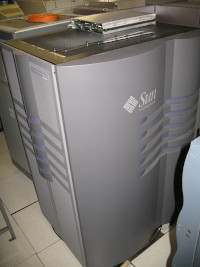

During the dot-com boom period the Sun Ultra Enterprise 10000 (also known as E10k) was one of the most popular supercomputers of the world. It's the successor of the Cray Superserver 6400, but Cray Research was acquired by Silicon Graphics and this division of supercomputers was than sold to Sun. Sun launched the successor, code-name Starfire, as the Ultra Enterprise 10000 in 1997.
This supercomputer is in contrast to the usual supercomputers by Cray a general-purpose system. Beside typical high-performance computing tasks, this system was often used as an application or database server, too. The partitioning feature of the Sun Ultra Enterprise 10000 enabled this system even to be split into multiple logical servers for certain functions. Due it's versatile usage the Sun Ultra Enterprise 10000 was present in nearly every area, where lot's of universal computing power was required.
Because of it's broad usage in several ares, this system is a must have supercomputer in every supercomputer collection.
If your interessted in more information about the Sun Ultra Enterprise 10000, have a look at Wikipedia.
We splitted our Sun Ultra Enterprise into two partitions. During operating you have access to 56 processor and 56 GB of main memory.
